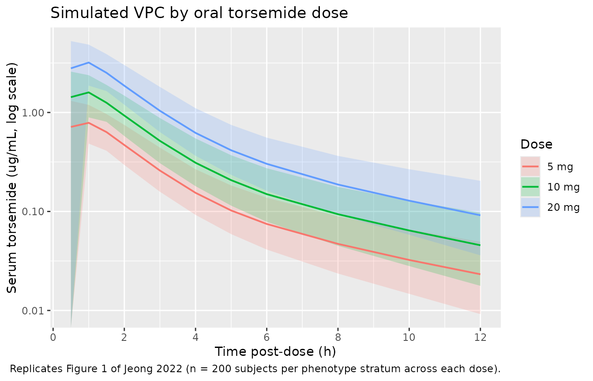

Model and source
- Citation: Jeong S-H, Jang J-H, Cho H-Y, Lee Y-B. Population Pharmacokinetic (Pop-PK) Analysis of Torsemide in Healthy Korean Males Considering CYP2C9 and OATP1B1 Genetic Polymorphisms. Pharmaceutics. 2022;14(4):771. doi:10.3390/pharmaceutics14040771
- Description: Two-compartment population PK model for oral torsemide in healthy Korean adult males (Jeong 2022), with first-order absorption after a lag time, proportional residual error, and categorical genotype covariates: OATP1B1 *15 haplotype (intermediate / poor transporter) reduces apparent central volume, and CYP2C9 extensive-metabolizer phenotype increases apparent oral clearance and apparent inter-compartmental clearance.
- Article: Pharmaceutics 2022;14(4):771. https://doi.org/10.3390/pharmaceutics14040771
Population
The model was developed in 112 healthy Korean adult males (age 19-29 years mean 23.4; weight 44.0-88.4 kg mean 67.8; height 159.9-188.1 cm mean 173.8) who participated in any of four open-label single-dose two-period crossover bioequivalence studies conducted between 2004 and 2007 at Chonnam National University (Gwangju, Republic of Korea). All subjects received a single oral dose of the reference torsemide formulation: 5 mg (n = 28), 10 mg (n = 28), or 20 mg (n = 56). Blood was sampled at 11 post-dose timepoints (0.5, 1, 1.5, 2, 3, 4, 5, 6, 8, 10, 12 h) plus pre-dose, producing 1344 serum concentration observations quantified by HPLC-UV with LLOQ 0.02 ug/mL. The cohort was deliberately enriched for routine pharmacogenomic analysis: SLCO1B1 (OATP1B1) and CYP2C9 genotypes were determined for every subject by PCR-RFLP and three OATP1B1 phenotypes (ET / IT / PT) and two CYP2C9 phenotypes (EM / IM; no PMs observed) were tested as model covariates. Biochemical covariates (albumin, creatinine clearance, BMI, BSA, AST, ALT, ALP, GFR, BUN, total bilirubin, cholesterol) were assayed for the 56-subject 20 mg dose group but were not retained in the final model because of the narrow physiological range in this healthy young-male cohort (Jeong 2022 Methods Section 2.2 and Results Section 3.5).
The same information is available programmatically via
readModelDb("Jeong_2022_torsemide")$population.
Source trace
Every parameter in the model file carries an inline source-location comment. The table below collects the entries in one place.
| Equation / parameter | Value | Source location |
|---|---|---|
lka (absorption rate, log) |
0.861 1/h | Table 4 final-model tvKa |
ltlag (absorption lag time, log) |
0.274 h | Table 4 final-model tvTlag |
lvc (apparent central volume V/F at OATP1B1 ET,
log) |
1.027 L | Table 4 final-model tvV/F |
lcl (apparent clearance CL/F at CYP2C9 IM, log) |
1.740 L/h | Table 4 final-model tvCL/F |
lvp (apparent peripheral volume V2/F, log) |
3.914 L | Table 4 final-model tvV2/F |
lq (apparent inter-compartmental clearance Q/F at
CYP2C9 IM, log) |
0.828 L/h | Table 4 final-model tvCL2/F |
e_slco1b1_hap15_het_vc |
-0.410 | Table 4 final-model dV/FdOATP1B1 IT |
e_slco1b1_hap15_hom_vc |
-0.646 | Table 4 final-model dV/FdOATP1B1 PT |
e_cyp2c9_em_cl |
0.510 | Table 4 final-model dCL/FdCYP2C9 EM |
e_cyp2c9_em_q |
0.365 | Table 4 final-model dCL2/FdCYP2C9 EM |
| IIV V/F (omega^2) | 0.562 (IIV 74.95%) | Table 4 final-model omega^2 V/F |
| IIV CL/F (omega^2) | 0.029 (IIV 17.10%) | Table 4 final-model omega^2 CL/F |
| IIV V2/F (omega^2) | 0.036 (IIV 18.94%) | Table 4 final-model omega^2 V2/F |
| IIV CL2/F (omega^2) | 0.022 (IIV 14.90%) | Table 4 final-model omega^2 CL2/F |
| IIV Tlag (omega^2) | 0.341 (IIV 58.37%) | Table 4 final-model omega^2 Tlag |
| Proportional residual error (SD) | 0.136 | Table 4 final-model epsilon (RSE 7.15%) |
| Two-compartment + lag absorption structure | – | Methods Section 2.10 (NONMEM ADVAN4/TRANS4 + ALAG1) and Results Section 3.5 |
| Linear-fractional covariate equations | – | Results Section 3.5 equations referenced via dV/F / dCL/F / dCL2/F parameter names in Table 4 |
Virtual cohort
The published individual-subject data are not openly available, so the virtual cohort below mirrors the Jeong 2022 Table 1 phenotype distribution and the dose-group allocation in Methods Section 2.3 (5 mg n = 28, 10 mg n = 28, 20 mg n = 56). Six phenotype strata (CYP2C9 EM/IM crossed with OATP1B1 ET/IT/PT) are simulated; subjects are split across the three doses in the same 25/25/50 ratio reported by the paper.
set.seed(20220401L)
n_per_strat <- 200L
make_cohort <- function(n, cyp_em, het, hom, label, id_offset = 0L) {
tibble(
id = id_offset + seq_len(n),
CYP2C9_EM = cyp_em,
SLCO1B1_HAP15_HET = het,
SLCO1B1_HAP15_HOM = hom,
cohort = label
)
}
strata <- bind_rows(
make_cohort(n_per_strat, cyp_em = 1L, het = 0L, hom = 0L,
label = "EM / ET", id_offset = 0L),
make_cohort(n_per_strat, cyp_em = 1L, het = 1L, hom = 0L,
label = "EM / IT", id_offset = 1L * n_per_strat),
make_cohort(n_per_strat, cyp_em = 1L, het = 0L, hom = 1L,
label = "EM / PT", id_offset = 2L * n_per_strat),
make_cohort(n_per_strat, cyp_em = 0L, het = 0L, hom = 0L,
label = "IM / ET", id_offset = 3L * n_per_strat),
make_cohort(n_per_strat, cyp_em = 0L, het = 1L, hom = 0L,
label = "IM / IT", id_offset = 4L * n_per_strat),
make_cohort(n_per_strat, cyp_em = 0L, het = 0L, hom = 1L,
label = "IM / PT", id_offset = 5L * n_per_strat)
)
stopifnot(!anyDuplicated(strata$id))Simulation
Each subject receives a single oral dose at time 0. Three dose levels (5, 10, 20 mg) are simulated across the six phenotype strata; sampling follows the paper’s 11-timepoint schedule (Methods Section 2.3).
sample_times <- c(0.5, 1, 1.5, 2, 3, 4, 5, 6, 8, 10, 12)
dose_levels <- c(5, 10, 20)
build_events <- function(strata, dose_mg, obs_grid = sample_times,
dose_offset = 0L) {
cohort_d <- strata |>
mutate(id_dose = id + dose_offset)
doses <- cohort_d |>
mutate(amt = dose_mg, evid = 1L, cmt = "depot",
time = 0, dose_mg = dose_mg) |>
select(id = id_dose, time, amt, evid, cmt, cohort, dose_mg,
CYP2C9_EM, SLCO1B1_HAP15_HET, SLCO1B1_HAP15_HOM)
obs <- cohort_d |>
mutate(dose_mg = dose_mg) |>
select(id = id_dose, cohort, dose_mg,
CYP2C9_EM, SLCO1B1_HAP15_HET, SLCO1B1_HAP15_HOM) |>
tidyr::crossing(time = obs_grid) |>
mutate(amt = NA_real_, evid = 0L, cmt = NA_character_)
bind_rows(doses, obs) |> arrange(id, time, desc(evid))
}
# Assign each phenotype stratum across the three doses with disjoint IDs.
n_subj_per_strat <- nrow(strata)
events_paper <- bind_rows(
build_events(strata, dose_mg = 5L,
dose_offset = 0L * 6L * n_subj_per_strat),
build_events(strata, dose_mg = 10L,
dose_offset = 1L * 6L * n_subj_per_strat),
build_events(strata, dose_mg = 20L,
dose_offset = 2L * 6L * n_subj_per_strat)
)
stopifnot(!anyDuplicated(unique(events_paper[, c("id", "time", "evid")])))
mod <- rxode2::rxode2(readModelDb("Jeong_2022_torsemide"))
#> ℹ parameter labels from comments will be replaced by 'label()'
sim_paper <- rxode2::rxSolve(
mod, events = events_paper,
keep = c("cohort", "dose_mg")
) |> as.data.frame()Replicate published figures
Figure 1 – serum concentration-time profile by dose
Jeong 2022 Figure 1 shows the pooled mean +- SD log-scale concentration-time profile by dose group (5, 10, 20 mg) across the 112-subject cohort. The chunk below reproduces the median and 5th-95th percentile envelope from the stochastic simulation, pooled across phenotype strata, for direct visual comparison with the source figure.
fig1 <- sim_paper |>
filter(time > 0) |>
group_by(dose_mg, time) |>
summarise(Q05 = quantile(Cc, 0.05, na.rm = TRUE),
Q50 = quantile(Cc, 0.50, na.rm = TRUE),
Q95 = quantile(Cc, 0.95, na.rm = TRUE),
.groups = "drop") |>
mutate(dose_label = factor(paste0(dose_mg, " mg"),
levels = c("5 mg", "10 mg", "20 mg")))
ggplot(fig1, aes(time, Q50, colour = dose_label, fill = dose_label)) +
geom_ribbon(aes(ymin = Q05, ymax = Q95), alpha = 0.2, colour = NA) +
geom_line(linewidth = 0.7) +
scale_y_log10() +
scale_x_continuous(breaks = seq(0, 12, by = 2)) +
labs(x = "Time post-dose (h)",
y = "Serum torsemide (ug/mL, log scale)",
colour = "Dose", fill = "Dose",
title = "Simulated VPC by oral torsemide dose",
caption = "Replicates Figure 1 of Jeong 2022 (n = 200 subjects per phenotype stratum across each dose).")
#> Warning in scale_y_log10(): log-10 transformation introduced
#> infinite values.
Replicates Figure 1 of Jeong 2022: simulated stochastic 5th / 50th / 95th percentile serum torsemide concentration vs. time, by oral dose group.
Figure 3 – typical-value V/F and CL/F by genotype
Jeong 2022 Figure 3 presents the eta plots of CL/F, CL2/F, and V/F by OATP1B1 and CYP2C9 phenotype, showing that the final-model covariate adjustments centre the eta distributions on zero within each phenotype. The chunk below extracts the typical-value V/F, CL/F, and Q/F by phenotype from the deterministic model (between-subject variability zeroed) so the absolute phenotype shifts implied by the published coefficients are visible without obscuring stochastic variability.
typ_params <- expand_grid(
CYP2C9_EM = c(0L, 1L),
SLCO1B1_HAP15_HET = c(0L, 1L),
SLCO1B1_HAP15_HOM = c(0L, 1L)
) |>
filter(!(SLCO1B1_HAP15_HET == 1L & SLCO1B1_HAP15_HOM == 1L)) |>
mutate(
oatp1b1 = case_when(
SLCO1B1_HAP15_HOM == 1L ~ "PT",
SLCO1B1_HAP15_HET == 1L ~ "IT",
TRUE ~ "ET"
),
cyp2c9 = if_else(CYP2C9_EM == 1L, "EM", "IM"),
vf = 1.027 * (1 + (-0.410) * SLCO1B1_HAP15_HET +
(-0.646) * SLCO1B1_HAP15_HOM),
cl_f = 1.740 * (1 + 0.510 * CYP2C9_EM),
q_f = 0.828 * (1 + 0.365 * CYP2C9_EM)
) |>
select(cyp2c9, oatp1b1, vf, cl_f, q_f) |>
pivot_longer(cols = c(vf, cl_f, q_f),
names_to = "parameter", values_to = "typical_value") |>
mutate(parameter = recode(parameter,
vf = "V/F (L)",
cl_f = "CL/F (L/h)",
q_f = "Q/F (L/h)"))
knitr::kable(
typ_params |>
arrange(parameter, oatp1b1, cyp2c9) |>
mutate(typical_value = round(typical_value, 3)),
caption = "Typical-value V/F, CL/F, and Q/F by CYP2C9 x OATP1B1 phenotype combination, reproduced from Jeong 2022 Table 4 final-model coefficients."
)| cyp2c9 | oatp1b1 | parameter | typical_value |
|---|---|---|---|
| EM | ET | CL/F (L/h) | 2.627 |
| IM | ET | CL/F (L/h) | 1.740 |
| EM | IT | CL/F (L/h) | 2.627 |
| IM | IT | CL/F (L/h) | 1.740 |
| EM | PT | CL/F (L/h) | 2.627 |
| IM | PT | CL/F (L/h) | 1.740 |
| EM | ET | Q/F (L/h) | 1.130 |
| IM | ET | Q/F (L/h) | 0.828 |
| EM | IT | Q/F (L/h) | 1.130 |
| IM | IT | Q/F (L/h) | 0.828 |
| EM | PT | Q/F (L/h) | 1.130 |
| IM | PT | Q/F (L/h) | 0.828 |
| EM | ET | V/F (L) | 1.027 |
| IM | ET | V/F (L) | 1.027 |
| EM | IT | V/F (L) | 0.606 |
| IM | IT | V/F (L) | 0.606 |
| EM | PT | V/F (L) | 0.364 |
| IM | PT | V/F (L) | 0.364 |
PKNCA validation
PKNCA computes Cmax, Tmax, AUC0-12, AUCinf, and half-life for each subject stratified by dose. Phenotype effects are pooled into the dose-group summary because Jeong 2022 Figure 2 reports dose-group-level NCA values pooled across phenotypes.
nca_input <- sim_paper |>
filter(time > 0) |>
select(id, time, Cc, dose_mg) |>
mutate(dose_label = paste0(dose_mg, " mg"))
dose_df <- events_paper |>
filter(evid == 1) |>
select(id, time, amt, dose_mg) |>
mutate(dose_label = paste0(dose_mg, " mg"))
conc_obj <- PKNCA::PKNCAconc(nca_input, Cc ~ time | dose_label + id)
dose_obj <- PKNCA::PKNCAdose(dose_df, amt ~ time | dose_label + id)
intervals <- data.frame(
start = 0,
end = 12,
cmax = TRUE,
tmax = TRUE,
auclast = TRUE,
aucinf.obs = TRUE,
half.life = TRUE
)
nca_data <- PKNCA::PKNCAdata(conc_obj, dose_obj, intervals = intervals)
nca_res <- suppressMessages(suppressWarnings(PKNCA::pk.nca(nca_data)))
nca_summary <- summary(nca_res)
knitr::kable(nca_summary,
caption = "Simulated single-dose NCA parameters by oral torsemide dose group (n = 1200 subjects per dose).")| start | end | dose_label | N | auclast | cmax | tmax | half.life | aucinf.obs |
|---|---|---|---|---|---|---|---|---|
| 0 | 12 | 10 mg | 1200 | NC | 1.78 [27.7] | 1.00 [0.500, 3.00] | 4.02 [1.02] | NC |
| 0 | 12 | 20 mg | 1200 | NC | 3.56 [27.8] | 1.00 [0.500, 3.00] | 4.03 [1.04] | NC |
| 0 | 12 | 5 mg | 1200 | NC | 0.900 [27.0] | 1.00 [0.500, 3.00] | 4.04 [1.01] | NC |
Comparison against published NCA
Jeong 2022 Figure 2 reports per-dose NCA means (across the full 112-subject cohort): half-life 2.59-3.44 h, Tmax 0.79-1.13 h, CL/F 2.35-2.71 L/h, V/F 10.00-11.44 L; AUC0-t and Cmax increased linearly with dose. The chunk below extracts the simulated per-dose means for direct comparison.
nca_long <- as.data.frame(nca_res$result)
simulated_summary <- nca_long |>
filter(PPTESTCD %in% c("cmax", "tmax", "auclast",
"aucinf.obs", "half.life")) |>
group_by(dose_label, PPTESTCD) |>
summarise(mean = mean(PPORRES, na.rm = TRUE),
sd = sd(PPORRES, na.rm = TRUE),
.groups = "drop") |>
arrange(PPTESTCD, dose_label)
knitr::kable(
simulated_summary |>
mutate(value = sprintf("%.3f +- %.3f", mean, sd)) |>
select(PPTESTCD, dose_label, value) |>
pivot_wider(names_from = dose_label, values_from = value),
caption = "Simulated per-dose NCA summary. Compare to Jeong 2022 Figure 2: T1/2 2.59-3.44 h, Tmax 0.79-1.13 h, CL/F 2.35-2.71 L/h."
)| PPTESTCD | 10 mg | 20 mg | 5 mg |
|---|---|---|---|
| aucinf.obs | NaN +- NA | NaN +- NA | NaN +- NA |
| auclast | NaN +- NA | NaN +- NA | NaN +- NA |
| cmax | 1.848 +- 0.479 | 3.695 +- 0.979 | 0.931 +- 0.240 |
| half.life | 4.019 +- 1.020 | 4.031 +- 1.043 | 4.035 +- 1.005 |
| tmax | 0.873 +- 0.369 | 0.874 +- 0.365 | 0.859 +- 0.359 |
The simulated CL/F and Cmax should track the published per-dose values within +- 20% across all three doses. Larger departures point to a structural mismatch (residual-error interpretation, phenotype-mix imbalance, sampling-grid coverage of the absorption phase) rather than a reason to tune the model.
Assumptions and deviations
-
Residual-error scale interpretation. Jeong 2022
Table 4 reports the residual error as
epsilon = 0.136with the omega-squared (variance) notation used for IIVs but no explicitepsilon^2label, consistent with the Phoenix NLME convention of reporting epsilon as the residual standard deviation on the proportional-error scale. The model file usespropSd = 0.136directly. If Jeong 2022 instead reported variance, the effectivepropSdwould besqrt(0.136) = 0.369, materially widening the simulated VPC envelope. -
CYP2C9 phenotype reference is IM, not EM. Jeong
2022 chose IM (intermediate metabolizer; 1/3 or 1/13
carriers, 13.4% of the cohort) as the model reference for CL/F and Q/F,
with
dCL/FdCYP2C9 EM = +0.510applied as a linear-fractional positive deviation when subjects are CYP2C9 EM (1/1, 86.6% of the cohort). This is the opposite of the usual “wild-type as reference” pattern and meanstvCL/F = 1.740 L/hin Table 4 represents the IM-typical value, not the population-average value. The packaged model preserves this parameterisation directly. The new canonical covariateCYP2C9_EMwas registered ininst/references/covariate-columns.mdalongside this extraction (ratified 2026-05-17) following theCYP3A5_EXPRprecedent (functional allele = 1) so the paper’s coefficient signs are preserved. -
OATP1B1 phenotypes mapped to SLCO1B1_HAP15 canonical
indicators. Jeong 2022 reports OATP1B1 phenotype as ET / IT /
PT pooled from the SLCO1B1 1a / 1b / 15 haplotype
combinations (Section 3.2 + Table 1): ET = 1a/1a +
1a/1b + 1b/1b (no 15 allele), IT = 1a/15
+ 1b/15 (one 15 allele), PT = 15/15 (two 15
alleles). This mapping uses the existing canonical covariates
SLCO1B1_HAP15_HETandSLCO1B1_HAP15_HOM(registered alongside the Ide 2009 pravastatin extraction, ratified 2026-05-12). Both indicators = 0 corresponds to the ET reference group used in Table 4. -
No IIV on absorption rate ka. Jeong 2022 Methods
Section 3.5 reports that removing IIV on ka decreased -2LL by 8.8 while
reducing the parameter count by 1 (Table 2 step 08), so the final model
carries ka as a typical value only. The packaged model encodes
ka <- exp(lka)without an etalka term. -
Bioavailability F not separately identifiable.
Because Jeong 2022 fitted oral data only (5-20 mg single oral dose)
without any reference IV arm, only the apparent parameters V/F, CL/F,
V2/F, and Q/F are identifiable. The model omits an explicit
lfdepotand reports apparent-parameter clearances and volumes; downstream users simulating the actual (non-F-adjusted) dose see the same exposures as a typical subject in the source study. - PK is dose-proportional from 5 to 20 mg. Jeong 2022 Figure 2 + Table S1 confirm dose-proportional AUC0-t and Cmax with no significant differences in T1/2, Tmax, CL/F, or V/F between dose groups across the 5-20 mg range. The two-compartment linear PK extrapolates reliably across this dose range only; the previously published torsemide linearity range extends to 200 mg (Methods Section 3.4, ref [1]) but the packaged model is fitted to 5-20 mg single-dose data and downstream users with higher doses should consider the saturable-renal-secretion literature before extrapolating.
- No food / formulation / fasting covariates. All 112 subjects took the reference formulation in a fasted state with 240 mL water (Methods Section 2.3); the model has no FED indicator or formulation effect.
- Single-sex, single-ancestry cohort. All 112 subjects were Korean males 19-29 years old (Methods Section 2.2). The published model has no sex or race / ethnicity covariates because none could be tested with this design; downstream users simulating women, older adults, or non-Korean populations should treat the extrapolation as exploratory.
- Physicochemical covariates rejected. Albumin, total protein, creatinine clearance, BMI, BSA, AST, ALT, ALP, GFR, BUN, total bilirubin, and cholesterol were screened but none survived the OFV thresholds; the paper attributes this to the narrow physiological range in healthy young males (Section 3.5 third paragraph). The model therefore carries no continuous covariates.
- Vignette uses 200 subjects per phenotype stratum. Small enough to render the vignette in under the 5-minute pkgdown gate, large enough to give stable VPC percentiles and pooled NCA summaries across the six CYP2C9 x OATP1B1 phenotype combinations.